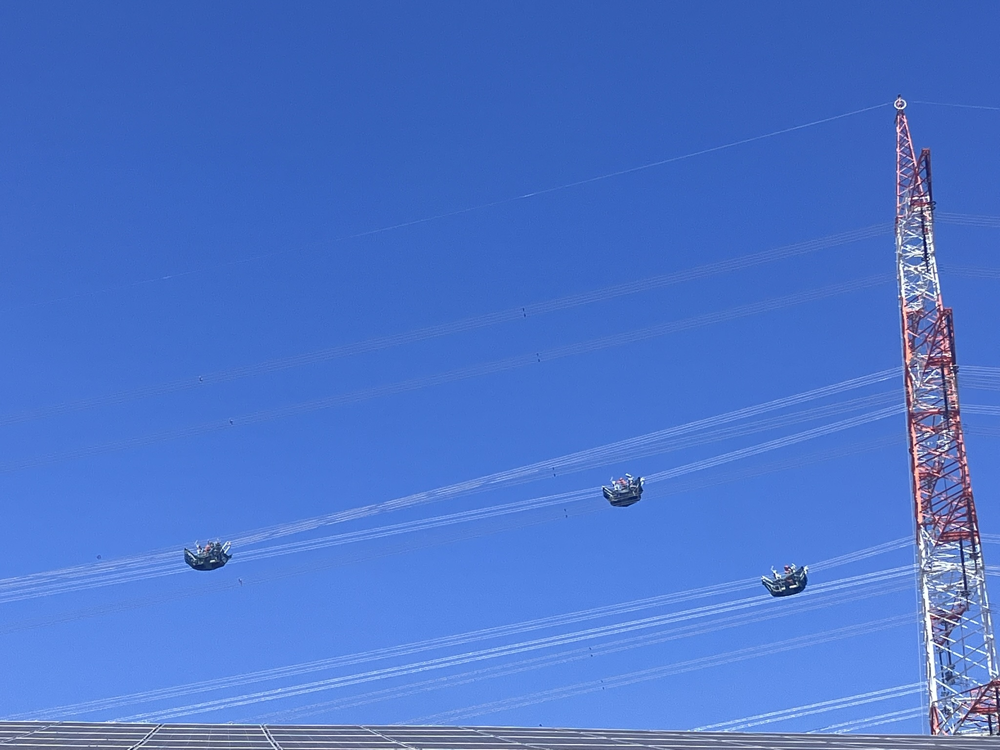

The Grid

Workers performing maintenance by riding in gondolas under high-voltage lines near the author's home in Darmstadt, Germany.
Audience
This article is written for professionals responsible for the purchase and use of energy in industrial contexts.
Lie-to-Children
In order to keep the article short and interesting, some complex topics are simplified.
The detailed story is available in my magnum opus — the Handbook — How to Ask and Answer Questions Related to Renewable Energy In Industrial Contexts.
The Grid?
The electrical grid.
Why talk about the Grid?
The Grid is a major factor in energy and will play an important role in the future. A role, which already affects and will affect everyone in industrial contexts. Its nature and upcoming changes should be, therefore, understood and taken into account.
What is the Grid?
The Grid is the infrastructure connecting in-front-of-the-meter sources of energy the behind-the-meter consumption. Over short, long and very long distances.
Behind-the-Meter (BTM) and In-Front-of-the-Meter (FTM)
The Grid both ends and does not end at your Grid Power Meter.
The Grid Power Meter demarcates two legal, but not electrical spaces: in-front-of-the-meter (FTM) and behind-the-meter (BTM)
From an electrical point of view in-front-of-the-meter (FTM) and behind-the-meter (BTM) is the same space.
Flow of Electricity vs Flow of Water
There are a number of misunderstanding in relation to the Grid, and I have been looking for a suitable metaphor to help me talk about them.
The closest metaphor would be the flow of water and it does not work.
Electricity and water behave in fundamentally different ways.
The most significant difference, is that water flow is controlled at the valve, which is not applicable to electricity. The flow of electricity is controlled at the source.
This means, that when the sun is shining and your solar panels produce more electricity, than you consume, and you should not deliver to the Grid; what you do is reduce the production. There is no valve between your solar production and the grid you can close.
Challenges Facing the Grid
When talking about the challenges facing the Grid, the common sense is an amalgamation of the two core challenges: "throughput" and "balance/imbalance". These are commonly amalgamated into "what the grid can do". And into "make the grid able to do more".
To properly understand and act upon the future of grid one should learn the difference.
Throughput
Throughput (transmission and distribution capacity)
Upgrading throughput—e.g., adding high-voltage lines or smart grid tech—lets you move more power, but it doesn’t by itself ensure that generation matches consumption at every moment.
So, upgrading the Grid for throughput addresses (and I am on purpose not saying "fixes") only half of the problem.
Balance/Imbalance
Supply and demand balance (balancing generation with consumption)
Upgrading throughput—e.g., adding high-voltage lines or smart grid tech—lets you move more power, but it doesn’t by itself ensure that generation matches consumption at every moment. You still need mechanisms like storage, demand response, or flexible generation to handle the supply–demand problem.
Grid and Nature
Ja, Vögel sterben jedes Jahr in Deutschland an Freileitungen und Masten durch tödliche Kollisionen und Stromschläge.In Deutschland verenden schätzungsweise 1 bis 2,8 Millionen Vögel jährlich an solchen Anlagen. https://niedersachsen.nabu.de/tiere-und-pflanzen/voegel/34803.html
In Deutschland sterben schätzungsweise 100.000 bis 250.000 Vögel jährlich durch Kollisionen mit Windkraftanlagen.
In Deutschland sterben schätzungsweise 100.000 bis 250.000 Vögel jährlich durch Kollisionen mit Windkraftanlagen.Einordnung im VergleichGlasscheiben: 100 bis 115 Millionen tote Vögel pro Jahr.Straßenverkehr: Rund 70 Millionen tote Vögel pro Jahr.Hauskatzen: 20 bis 100 Millionen tote Vögel pro Jahr.
Conclusion:
Less Grid is better for the nature.
Grid and Energy Productoin
In an AC grid, generation must match consumption in real time. Any imbalance causes the grid frequency to deviate from its nominal value (50 Hz or 60 Hz). The system uses that frequency deviation as a feedback signal: if demand rises, frequency drops; generators automatically increase output (primary control), and additional reserves are dispatched (secondary/tertiary control) to restore balance.
Tolerable variations
Frequency: Most grids allow ±0.5 Hz (sometimes ±1 Hz) for brief periods; sustained deviations outside ±0.1–0.2 Hz trigger protective actions.
Voltage: ±5 % is typical; beyond ±10 % risks equipment damage.
Time: Imbalances of seconds to minutes are managed by inertia and reserves; longer mismatches require curtailment, load shedding, or blackouts.
So the match must be precise in the long run, but the grid can tolerate small, short-lived deviations while control systems act to restore equilibrium.
Cost of Electricity vs Cost of Transport
Netherlands
Dutch grid tariffs.
Current tariffs are largely fixed and based on connection capacity and consumption
There are discussions about variable grid tariffs in the Netherlands
The Dutch government is addressing grid congestion with various measures
The Dutch government and grid operators (Liander, Enexis, Stedin, TenneT) are implementing other measures including regional tenders for flexible deployment starting in 2026, and procuring flexibility to free up capacity.
Belgium
France
Germany
Switzerland
Austria
UK
Finland
Measures You Should Take
Study Your Energy Profile
Create a Strategy
Restructure, Purchase and Manage
To operate during a grid failure, inverters and batteries must be installed in a backup or hybrid configuration that includes an automatic way to disconnect from the public utility. [1] (https://en.u-energie.de/blogs/can-a-hybrid-inverter-continue-to-power-the-house-during-a-power-outage), [2] (https://www.anernstore.com/blogs/diy-solar-guides/why-inverters-cut-out-grid-fails)Standard grid-tied systems shut down during power cuts for safety reasons (called anti-islanding) to prevent electricity from flowing back into the lines and harming utility workers. [1] (https://www.youtube.com/watch?v=kSVPATedUXg&t=34)Core Components Needed for Backup OperationHybrid Inverter: Unlike standard inverters, a hybrid inverter can detect a grid failure, isolate your home, and form a local "microgrid" using battery or solar power. [1] (https://www.anernstore.com/blogs/diy-solar-guides/why-inverters-cut-out-grid-fails), [2] (https://en.u-energie.de/blogs/can-a-hybrid-inverter-continue-to-power-the-house-during-a-power-outage)Battery Storage: A compatible battery bank (such as LiFePO4) stores energy to power your home when the sun isn't shining or the grid is down. [1] (https://en.u-energie.de/blogs/can-a-hybrid-inverter-continue-to-power-the-house-during-a-power-outage), [2] (https://www.anernstore.com/blogs/diy-solar-guides/why-inverters-cut-out-grid-fails)Transfer Switch / Backup Gateway: A physical safety device (an Automatic Transfer Switch or backup box) automatically disconnects your home wiring from the public grid before emergency power activates. [1] (https://www.highflowenergy.com.au/solar-battery-blackout-protection/), [2] (https://www.reddit.com/r/SolarDIY/comments/1h06rgz/gettingaccesstogeneratedenergyduringpower/)Critical Loads Subpanel: A separate subpanel that groups essential circuits (like refrigerators, lights, and Wi-Fi) so you do not drain the battery trying to power heavy appliances like air conditioners. [1] (https://www.anernstore.com/blogs/diy-solar-guides/why-inverters-cut-out-grid-fails)
Installation ApproachesHybrid Inverter with Backup Port:The inverter features a dedicated emergency power output.Only pre-selected critical loads wired to this specific port stay active during an outage. [1] (https://www.youtube.com/watch?v=Rw6uRaIu0aw&t=76)Whole-Home Backup Gateway:Installed between the main utility meter and your main electrical panel.It isolates the entire home automatically, allowing the battery and solar system to back up all household circuits (subject to total power limits). [1] (https://www.youtube.com/watch?v=Rw6uRaIu0aw&t=76)Battery-Free Daytime Backup (Limited):Some modern systems offer limited daytime backup straight from solar panels without a battery (e.g., specialized solar inverters with backup sockets or microinverter setups).These only work when the sun is shining and will cut out if a cloud passes over. [1] (https://www.reddit.com/r/SolarDIY/comments/1ffk9yx/gridtiedhybridinverterscantoperateon_their/), [2] (https://www.youtube.com/watch?v=kSVPATedUXg&t=34), [3] (https://www.zonnefabriek.nl/en/knowledge-center/back-up-power-when-the-grid-goes-down-is-becoming-increasingly-popular/)If you'd like to plan your setup, tell me:Do you already have solar panels or an inverter installed?Are you looking for whole-home backup or just essential circuits?